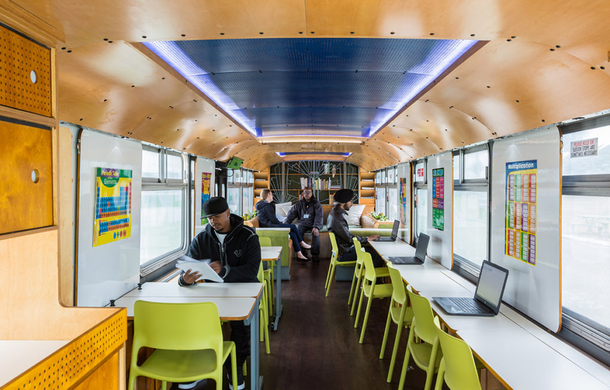
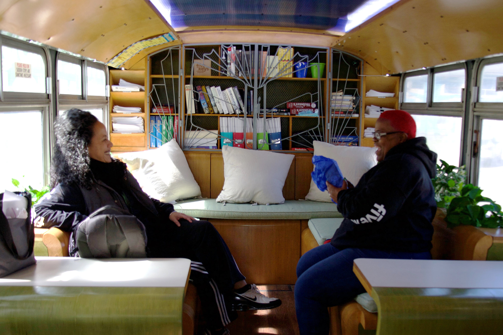
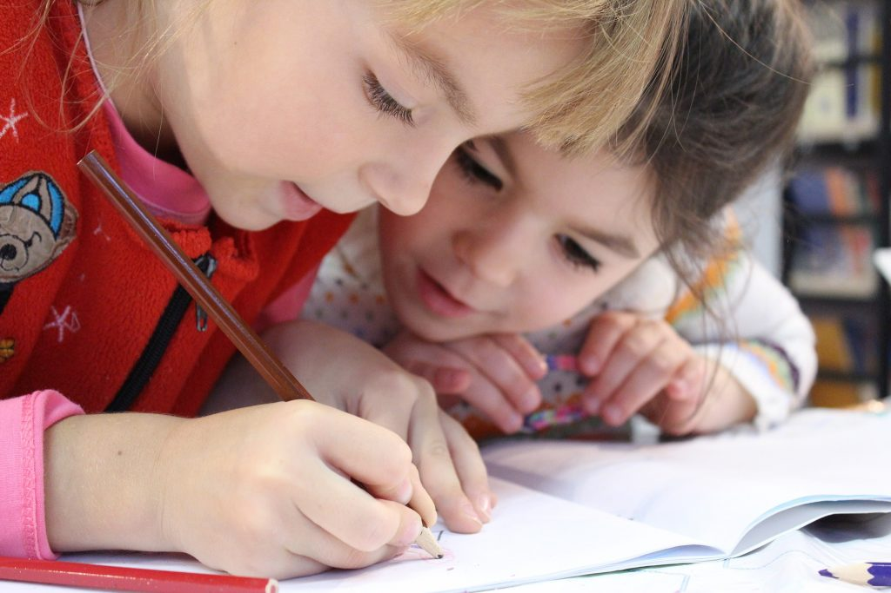

Welcome to our project on "Education on Wheels", a mobile classroom initiative to reach underserved communities and bring learning to every Filipino child.
SDG 4 - Quality Education

The Philippine education system faces several key gaps that hinder progress toward SDG 4: Quality Education. A significant portion of students experience learning poverty, particularly in reading and comprehension, due to ineffective early instruction and large class sizes. Access remains unequal, especially in rural, indigenous, and low-income communities, where school facilities, internet connectivity, and teacher availability are limited. Many teachers lack adequate training and support, while the curriculum remains outdated and overloaded, failing to equip students with essential 21st-century skills. The digital divide further exacerbates learning inequalities, particularly highlighted during the COVID-19 pandemic. High dropout rates, especially at the secondary level, and limited opportunities for adult and lifelong learning also contribute to the country's ongoing education challenges.
External Resources
- UN - Quality Education
- Department of Education PH
- Transforming Education Towards SDG 4
- Reaching SDG 4: Our shared responsibility and renewed commitment to action
- Sustainable Development Goal for Quality Education (SDG 4): A study on SDG 4 to extract the pattern of association among the indicators of SDG 4 employing a genetic algorithm
About Education on Wheels
Education on Wheels is a mobile learning initiative that transforms vehicles like buses or vans into traveling classrooms, bringing education directly to communities with limited or no access to traditional schools. Its primary purpose is to bridge educational gaps by reaching underserved populations—such as children in remote areas, out-of-school youth, and marginalized groups—who face barriers due to geography, poverty, or crisis situations. By offering flexible, accessible, and often tech-enabled instruction, Education on Wheels promotes inclusivity and equity in education, aligning closely with the goals of SDG 4: Quality Education.
Key Features of the Solution
- Classroom Bus or Van: Outfitted with desks, whiteboard, solar panels, and climate control for all-weather operation.
- Digital Resources: Tablets/laptops preloaded with offline educational content (aligned with national curricula).
- Mobile Internet: Satellite or mobile network connection for real-time virtual lessons when signal allows.
- Flexible Scheduling: Visits based on regional school calendars, agricultural seasons, or community availability.
- Multilingual Instruction: Content in local languages and dialects to ensure inclusivity.
- Hygiene KIts & Meals: Promotes attendance by covering basic needs. Useful in refugee/disaster contexts.
Plans for Implementation
- Planning & Partnerships Partner with:
- Local governments (for curriculum, student data)
- NGOs (for logistics, local knowledge)
- Tech firms (for equipment and software)
- Conduct needs assessments to identify underserved areas.
- Design & Pilot
- Build 2–3 prototype vehicles with modular interiors.
- Pilot in 2 rural regions with different terrains or demographic challenges.
- Measure impact on attendance, literacy, and engagement.
- Scale & Sustain
- Train local educators to run and maintain units.
- Develop community ownership models (e.g., rotating volunteers).
- Secure long-term funding from government education budgets or CSR donors.
Advantages
- Flexible and Mobile: Reaches children otherwise excluded from school systems.
- Community-Integrated: Builds trust and fosters local participation.
- Emergency-Ready: Can pivot to areas affected by displacement, conflict, or natural disasters.
Expected Impact
- Improve literacy and numeracy rates in remote areas.
- Reduce school dropout rates, especially among girls and working children.
- Increase community engagement in education.
External Resources
- The Pros and Cons of Portable Classrooms: Is it the Right Choice for Your School?
- How Mobile Classrooms Help Cities Reach Children & Families Experiencing Homelessness
- How Portable Classrooms Can Benefit Your School
- How School Portables Became Permanent Classrooms
- Mobile Classrooms Bring STEM Where Students Need IT
SDG 4: Quality Education Videos
Existing Mobile Classrooms
Mobile classrooms have made significant strides in recent years, especially in extending education to underserved and remote communities. These mobile units, often equipped with digital tools and internet access, have brought learning opportunities to students who might otherwise be left behind. However, despite this progress, accessibility remains a major challenge. Many regions still lack the infrastructure or funding to support consistent deployment, and connectivity issues can limit the effectiveness of mobile learning. To truly maximize their impact, mobile classrooms need greater investment in reliable technology, expanded coverage areas, and tailored educational content that meets the diverse needs of different communities.
Contact Us
For more information, collaboration, or inquiries, please reach out:
Email: slspi.ronaldarnaez2@.com
Phone: 0963-379-8164
Location: Baguio City, Philippines